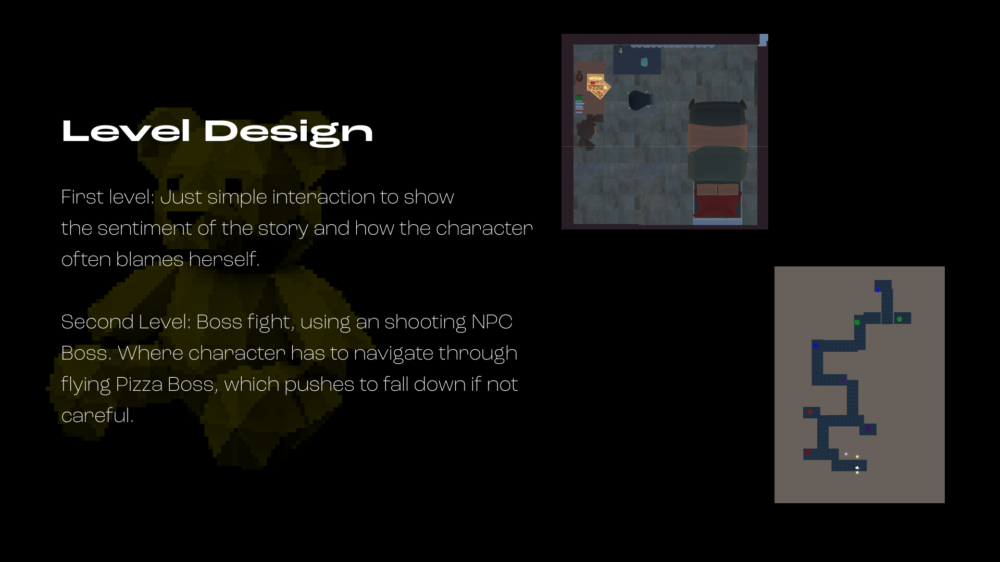
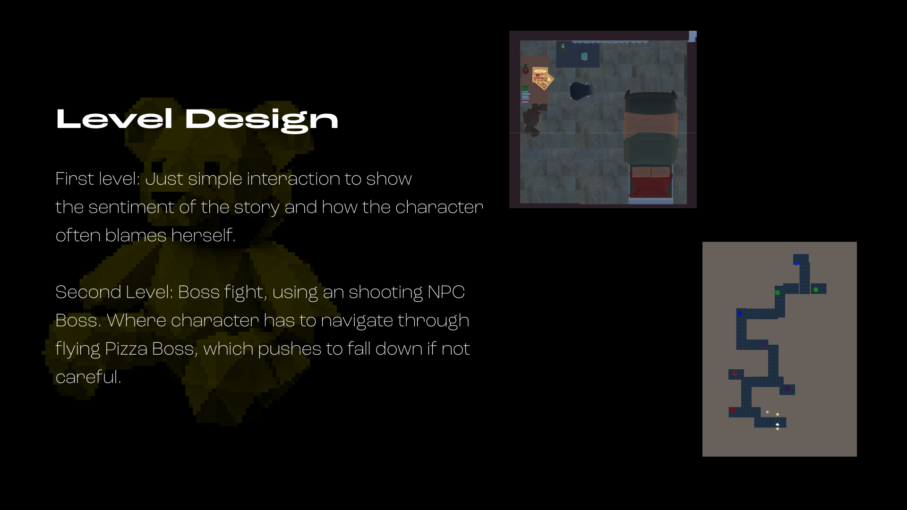

During my one-year experience at i14y, Deutsche Telekom, a consortium focused on Open Radio Networks, Lab both as internship and working student,
I developed several technical demos: Augmented Reality, Physical-Digital interfaces, Touch Screens, animation...
I was able to develop skills in different creative approaches that fit the assignment—using game engines, web design, 3D rendering, motion, animation, and video editing.
Overall purpose: bring the topic of Open Radio Access closer to the audience. This inspired my Bachelor Thesis.
This project was created within the course Interactive Programming Design, taught by Tz-Heng Fu at NTUT, Taiwan.
I learned how to approach application development, in this context, a game—from a software engineering perspective. I gained hands-on experience building character controls, dialogs and inventory systems, state machines, and class diagrams.
It was my first time building such complex game from scratch. While it was challenging, it provided invaluable learning for me as an interaction designer.

 
